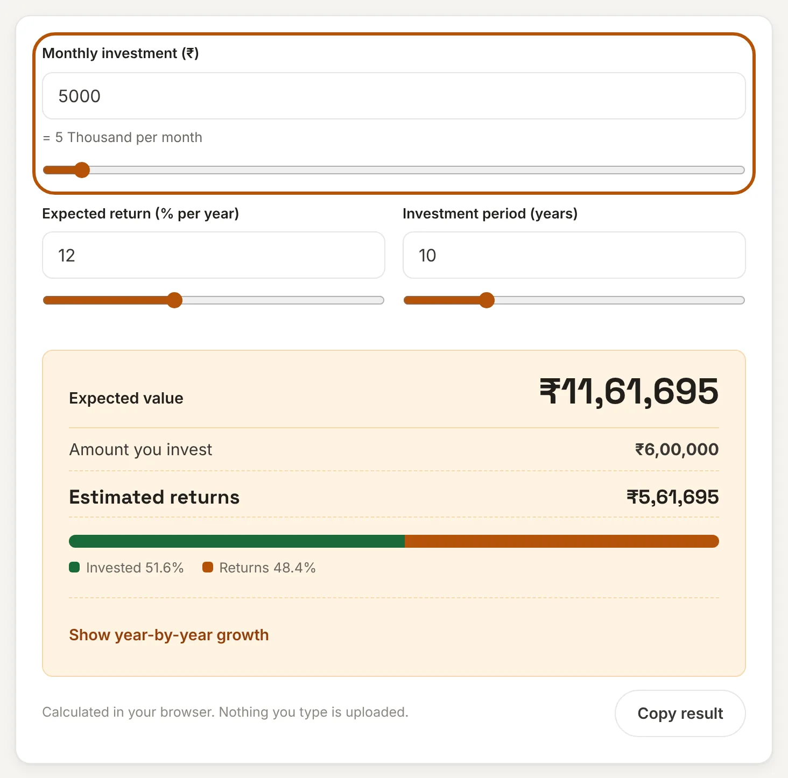
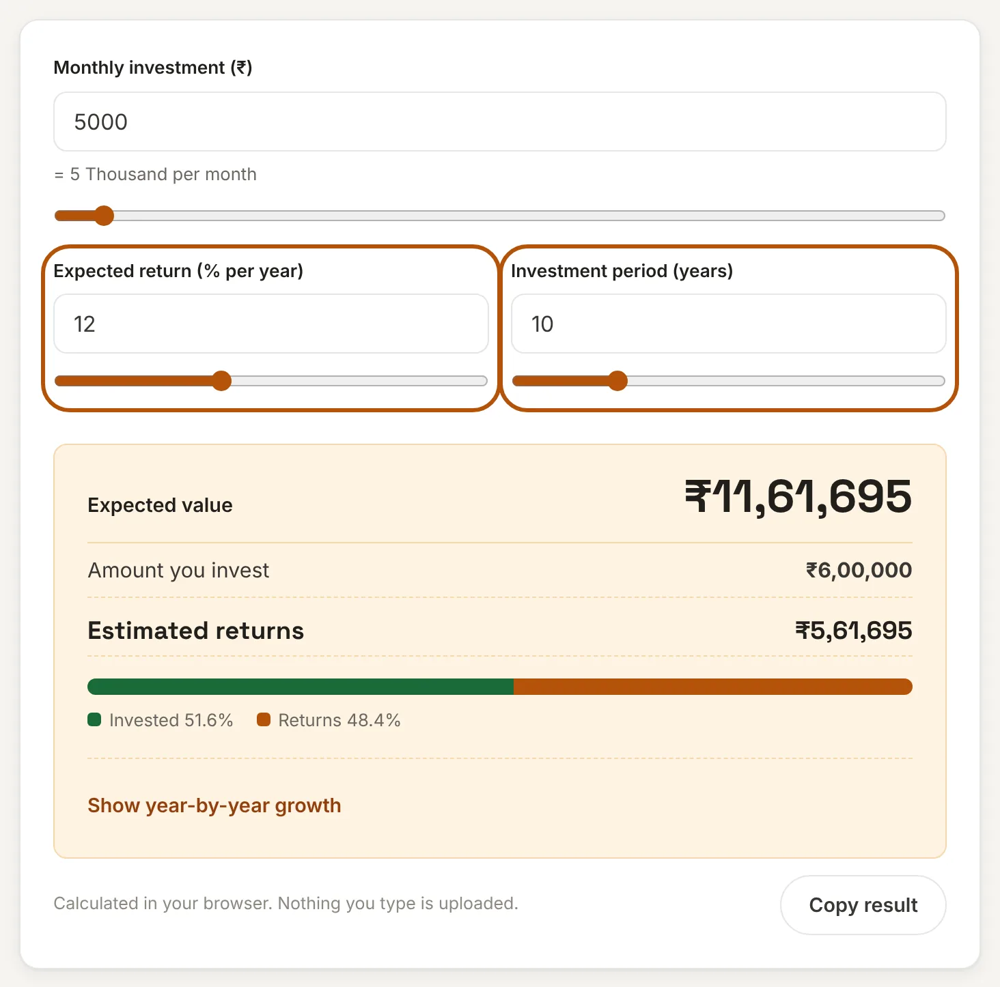
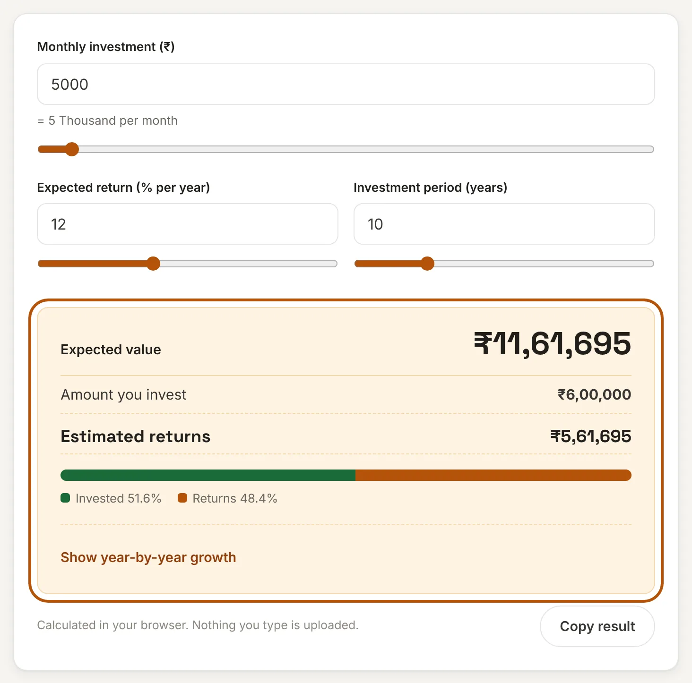
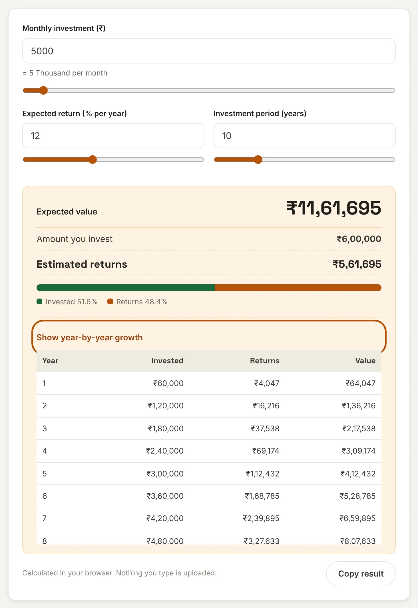

What is a SIP?
SIP stands for Systematic Investment Plan. Instead of investing a large sum at one time, you invest a fixed amount in a mutual fund at regular intervals, usually every month. The amount is debited from your bank account on a date you choose and used to buy units of the fund at that day's price.
A SIP works well for two reasons. First, it builds the habit of investing before you spend. Second, because you buy every month, you buy more units when prices are low and fewer when prices are high. This is called rupee cost averaging, and it means you do not have to guess the right day to invest.
How to use this SIP calculator
Three quick steps show what your monthly investment could become. Each step below shows what you will see on the calculator above.
Step 1: Enter your monthly investment
Type the amount you plan to invest every month, or drag the slider. The calculator writes the amount in thousands or lakhs underneath so you can check that the number is what you meant.

Step 2: Set the expected return and the period
Enter the yearly return you expect and how many years you will keep investing. Nobody knows future returns, so treat this as an assumption and try a few values. A lower number shows a cautious case and a higher one a hopeful case.

Step 3: Read the result
The expected value appears at the top. Below it you can see the total you put in and the estimated returns on top of that. The coloured bar shows how much of the final value is your own money and how much is growth. Use Copy result to paste the summary into a message or a spreadsheet.

Optional: see how the money grows each year
Select Show year-by-year growth to see the invested amount, the returns and the total value at the end of every year. You will notice that the returns column grows faster each year. That is compounding at work.

SIP formula
Here FV is the future value, P is the monthly investment, i is the monthly rate of return (annual rate ÷ 12 ÷ 100) and n is the number of monthly instalments. The last factor (1 + i) assumes each instalment is invested at the start of the month. If the return is 0%, the value is simply P × n.
Worked example: P = ₹5,000, annual return 12%, period 10 years. Then i = 0.01 and n = 120. The factor ((1.01)120 − 1) ÷ 0.01 is about 230.04, so FV = 5,000 × 230.04 × 1.01 = ₹11,61,695. You invested ₹6,00,000, so the estimated gain is ₹5,61,695.
SIP examples
| Monthly SIP | Return | Period | Invested | Expected value | Returns |
|---|---|---|---|---|---|
| ₹1,000 | 12% | 10 years | ₹1,20,000 | ₹2,32,339 | ₹1,12,339 |
| ₹5,000 | 12% | 10 years | ₹6,00,000 | ₹11,61,695 | ₹5,61,695 |
| ₹10,000 | 12% | 15 years | ₹18,00,000 | ₹50,45,760 | ₹32,45,760 |
| ₹25,000 | 12% | 20 years | ₹60,00,000 | ₹2,49,78,698 | ₹1,89,78,698 |
These are illustrations that assume a steady 12% every year. Real market returns move up and down and can be negative in a given year.
Why time matters more than the amount
The longer the money stays invested, the more of the final value comes from returns instead of your own deposits. The table uses ₹5,000 a month at 12%.
| Years | Invested | Expected value | Returns |
|---|---|---|---|
| 5 | ₹3,00,000 | ₹4,12,432 | ₹1,12,432 |
| 10 | ₹6,00,000 | ₹11,61,695 | ₹5,61,695 |
| 15 | ₹9,00,000 | ₹25,22,880 | ₹16,22,880 |
| 20 | ₹12,00,000 | ₹49,95,740 | ₹37,95,740 |
| 25 | ₹15,00,000 | ₹94,88,175 | ₹79,88,175 |
| 30 | ₹18,00,000 | ₹1,76,49,569 | ₹1,58,49,569 |
Doubling the period from 10 to 20 years does not double the result, it more than quadruples it: ₹11.6 lakh becomes ₹49.96 lakh for only twice the deposits. If you wait 10 years and then invest ₹5,000 a month for only the remaining 10 years, you end with ₹11.6 lakh instead of ₹49.96 lakh. Starting early is worth more than raising the amount later.
How the expected return changes the result
Small differences in the return add up over long periods. For ₹5,000 a month over 15 years the expected value is ₹17.4 lakh at 8%, ₹20.9 lakh at 10%, ₹25.2 lakh at 12% and ₹30.6 lakh at 14%. Because no one can promise a return, it helps to look at the lower figures when you plan an important goal such as a child's education or retirement.
This calculator shows returns before tax and before any exit load. Fund costs are already included in a fund's reported returns, so enter a return that you expect after those costs.
Planning other goals too? Compare a SIP with a guaranteed option using the FD Calculator or the PPF Calculator, and check your loan commitments with the EMI Calculator.
Frequently asked questions
How is the SIP return calculated?
The calculator uses FV = P × [((1 + i)^n − 1) ÷ i] × (1 + i), where P is the monthly investment, i is the monthly rate (annual rate ÷ 12) and n is the number of months. For ₹5,000 a month at 12% for 10 years, the expected value is ₹11,61,695.
Are SIP returns guaranteed?
No. Mutual fund returns depend on the market and can be lower than expected or negative, especially over short periods. The result shown here is an estimate based on the return you enter, not a promise.
What return should I enter?
Use a cautious figure and try more than one. Returns differ by fund type: debt funds usually have lower and steadier returns than equity funds. Check the long-term record of the fund you are considering and do not assume that the past will repeat.
Is a SIP better than a lump sum?
It depends on how you earn and invest. A SIP suits people who invest from monthly income and want to avoid timing the market. A lump sum can do better if the market rises soon after you invest and worse if it falls. This calculator covers SIPs only.
Does the result include tax?
No. The figures are before tax and before any exit load. Tax on mutual fund gains depends on the fund type and how long you hold the units, so check the current rules or ask a tax adviser.
Is my data sent to a server?
No. This calculator runs entirely in your browser. The amounts you enter are never uploaded or stored.
Disclaimer: Mutual fund investments are subject to market risk. This calculator gives estimates for convenience and is not investment, tax or financial advice. See our disclaimer.